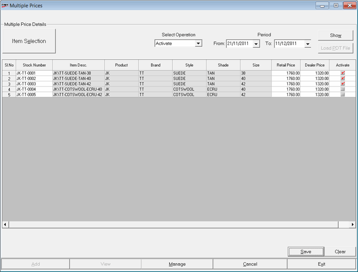

The Multiple Prices window for managing the prices is as shown.

Operation Type: Select Activate,Deactive or Archive to set the corresponding status for the required prices.
Multiple Price Details:
Item Selection: Click to open the Browse window to select the required items. You can select all items without specifying any filter criteria or select some items as per your requirement.
The items that show in the Browse window are based on the system parameter configuration and the class1class2 applicability, if relevant.
Select the required items and click Ok.
Period Selection: Select From and To dates to list the set of prices active during the period, for the selected items.
Show: Click to display the price list of selected items.
In the grid, under the title Deactivate, select/ deselect as required to indicate the prices that have to be activated/ deactivated.